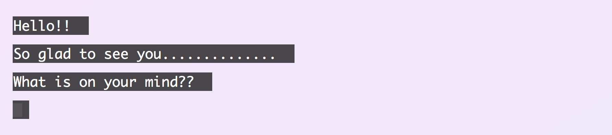

Fetcher is a JavaScript web app powered by the DeepAI text generation API
It requests user input, then produces a fever-dream story based on the seed text.
The resulting story is printed one character at a time at random intervals, producing the effect of chatting with a bot.